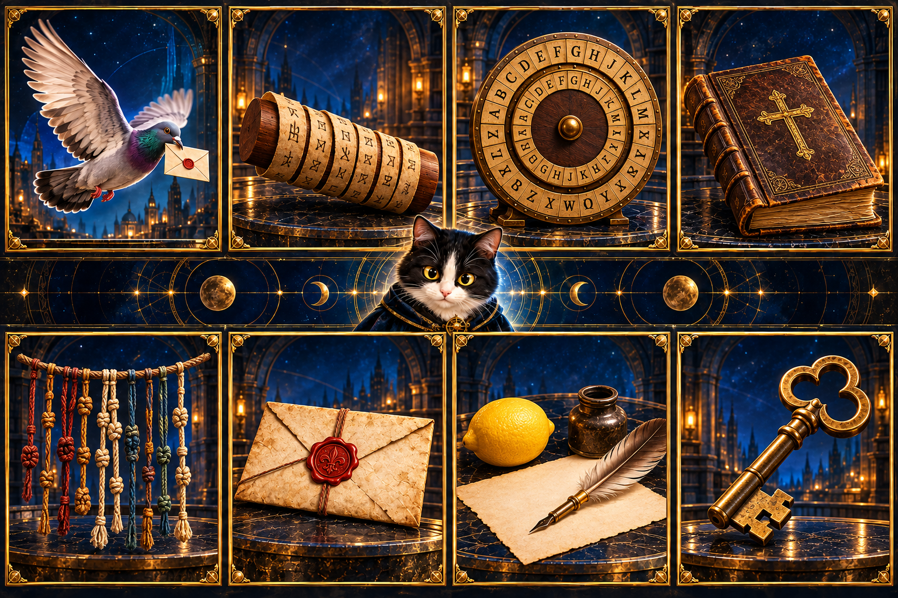

Криптографія. Подорож у часі
Перегляньте відео перед практикою.
Переглянути відеоВхідний квиток
Вхід у світ таємниць перед початком розділів. Перегляньте відео й презентацію та отримайте квиток у подорож.

Перегляньте відео перед практикою.
Переглянути відеоПрезентація для опрацювання теми.
Відкрити презентаціюП’ять станцій: таємний лист, архів винаходів, скитала, алгоритм і ключ, власний артефакт. Наприкінці — PDF-паспорт.
Почати практикуВідкрийте чат-бот і оберіть ланцюжок «Таємне повідомлення».
Відкрити чат-ботЗаписуємо повідомлення рядками, читаємо стовпчиками. Ключ — кількість стовпчиків. Символ «_» доповнює останній рядок. Використовуйте додатний цілий ключ, наприклад 2, 3 або 4.
message = "ТАЄМНИЙЛИСТ"
key = 3
while len(message) % key != 0:
message += "_"
result = ""
for column in range(key):
result += message[column::key]
print(result)ТМЙСАНЛТЄИИ_.len(), циклом while і зрізом [column::key], якщо вони незнайомі.Якщо конструкції Python незнайомі, рекомендуємо ознайомитися з ними. Програмування тут — додатковий спосіб дослідження.
Натисніть «Запустити».
Код виконується у вашому браузері. Перший запуск завантажує Python — потрібен інтернет. На телефоні приклад можна розгорнути, а код у Runner — редагувати.